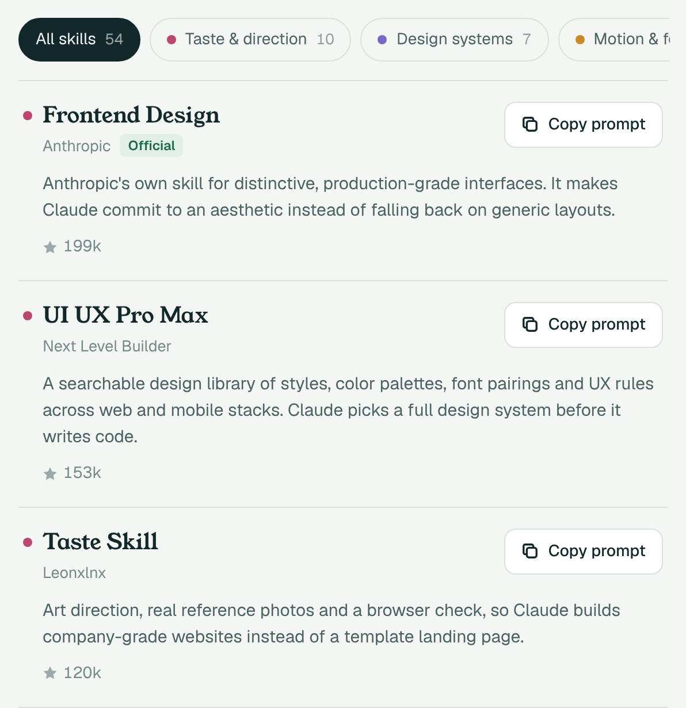

Giverny
Give Claude taste.
54 design skills for Claude Code. Copy one prompt, paste it, done. Free.
Here’s how to fix it in 30 seconds.
Skills are small instruction packs Claude Code loads by itself when your task matches.
Anthropic, Vercel, Google, Figma and top designers have published dozens of them for design and UI work. Most people have never installed one.

54 design skills for Claude Code. Free. Many more coming very soon.
54 design skills for Claude Code. Copy one prompt, paste it, done. Free.